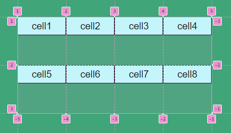
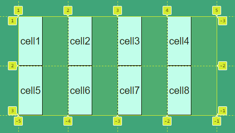
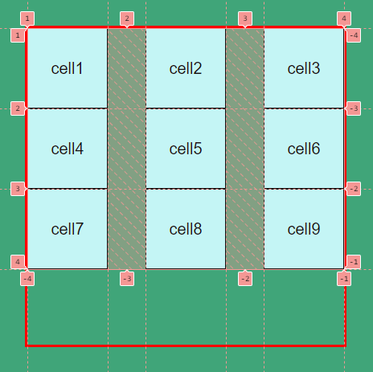

CSS Grid Layout
by Aliaksandr Astrouski
What is GRID?
Terminology
Grid-container
Grid-lines
Grid-track
Grid-cell
Grid-item
Grid-area
Grid-gap
Create grid-container
display: grid;
display: inline-grid;
Columns and rows
grid-template-columns: 100px 5em 10% 6vw;
grid-template-rows: 7rem 10vh;
Using length units
Absolute lengths:
px, pt cm, mm ...
Relative lengths:
em, rem vh, vw % ...
New relative unit - Fr
Usage:
grid-template-columns: 1fr 2fr 1fr;
grid-template-rows: 1fr 1fr;
Mixing:
grid-template-columns: 1fr 100px 1fr;
grid-template-rows: 1fr 15vh;
Similar:
grid-template-columns: 1fr 1fr 1fr 1fr; grid-template-rows: 1fr 1fr;same asgrid-template-columns: 25% 25% 25% 25%; grid-template-rows: 50% 50%;same asgrid-template-columns: 100px 100px 100px 100px; grid-template-rows: 100px 100px;
Repeat
Usage:
grid-template-columns: 1fr 1fr 1fr 1fr;same asgrid-template-columns: repeat(4, 1fr);

multiple tracks
grid-template-columns: repeat(2, 1fr 2fr);
among other values
grid-template-columns: 1fr repeat(2, 2fr) 1fr;
Positioning items
By line numbers
grid-row-start: 2; grid-column-start: 3;same asgrid-row: 2; grid-column: 3;same asgrid-area: 2 / 3;
Order property
Order: <integer>;

Grid areas
Positioning
grid-row-start: 1;
grid-row-end: 3;
grid-column-start: 2;
grid-column-end: 4;
Shorthands
grid-row: 1 / 3; grid-column: 2 / 4;same asgrid-area: 1 / 2 / 3 / 4;
span
grid-row: 1 / span 2; grid-column: 2 / span 2;same asgrid-area: 1 / 2 / span 2 / span 2;
Named grid lines
Naming lines
grid-template-columns: [start-line] 1fr [middle-left-line] 1fr ...
... [center-line] 1fr [middle-right-line] 1fr [end-line];
grid-template-rows: [start-line] 1fr [center-line] 1fr [end-line];
Positioning areas
grid-area: start-line / middle-left-line / span 2 / span 2;
Items alignment and gaps
align-items
.grid-container {
align-items: start;
}

align-self
.grid-cell1 {
align-self: start;
}
.grid-cell2 {
align-self: center;
}
justify-items
.grid-container {
justify-items: start;
}

justify-self
.grid-cell1 {
justify-self: start;
}
.grid-cell2 {
justify-self: end;
}
Gaps
row-gap: 10px; column-gap: 20px;same asgap: 10px 20px;
Tracks alignment
justify-content & align-content
normal stretch
start end center
space-around space-between space-evenly
baseline first baseline last baseline
grid styles
.grid-container {
width: 400px;
height: 400px;
display: grid;
grid-template-columns: repeat(3, 100px);
grid-template-rows: repeat(3, 100px);
border: 3px solid red;
}
Result

justify-content
.grid-container {
justify-content: space-between;
}

align-content
.grid-container {
align-content: center;
}
Template areas
Usage:
grid-template-areas: "header header header"
"aside main main"
"footer footer footer";
Positioning
.grid-cell1 {
grid-area: header;
}
.grid-cell2 {
grid-area: aside;
}
.grid-cell3 {
grid-area: main;
}
.grid-cell4 {
grid-area: footer;
}
Result